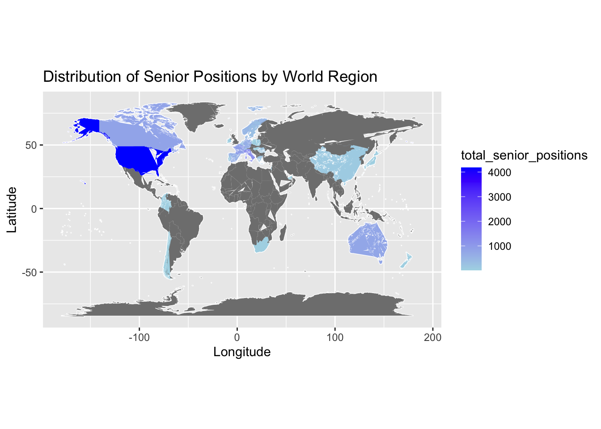
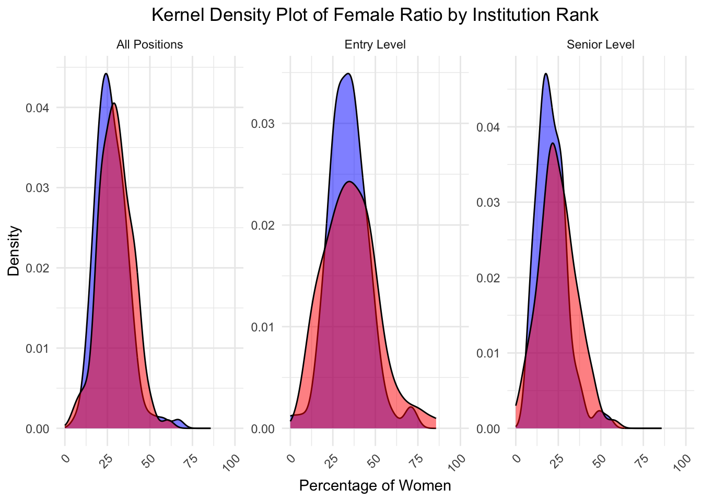

── Attaching core tidyverse packages ──────────────────────── tidyverse 2.0.0 ──
✔ dplyr 1.1.3 ✔ readr 2.1.4
✔ forcats 1.0.0 ✔ stringr 1.5.0
✔ ggplot2 3.4.3 ✔ tibble 3.2.1
✔ lubridate 1.9.2 ✔ tidyr 1.3.0
✔ purrr 1.0.2
── Conflicts ────────────────────────────────────────── tidyverse_conflicts() ──
✖ dplyr::filter() masks stats::filter()
✖ dplyr::lag() masks stats::lag()
ℹ Use the conflicted package (<http://conflicted.r-lib.org/>) to force all conflicts to become errors
new1_data <-read_csv("sample1_updated.csv")
Rows: 667 Columns: 4
── Column specification ────────────────────────────────────────────────────────
Delimiter: ","
chr (2): level, country
dbl (2): rank, female_ratio
ℹ Use `spec()` to retrieve the full column specification for this data.
ℹ Specify the column types or set `show_col_types = FALSE` to quiet this message.
glimpse(new1_data)
Rows: 667
Columns: 4
$ rank <dbl> 1, 1, 1, 2, 2, 2, 3, 3, 3, 4, 4, 4, 5, 5, 6, 6, 6, 7, 7, …
$ level <chr> "All Positions", "Entry Level", "Senior Level", "All Posi…
$ female_ratio <dbl> 26.269316, 49.090908, 20.967741, 29.032259, 27.777779, 9.…
$ country <chr> "United Kingdom of Great Britain and Northern Ireland", "…
The following object is masked from 'package:purrr':
map
world_map <-map_data("world")merged_data <-merge(world_map, region_data, by.x ="region", by.y ="country", all.x =TRUE)library(ggplot2)ggplot(merged_data, aes(x = long, y = lat, group = group)) +geom_polygon(fill ="white", color ="white") +geom_polygon(aes(fill = total_senior_positions), color ="white", size =0.001) +scale_fill_gradient(low ="lightblue", high ="blue") +coord_fixed(ratio =1.3) +labs(title ="Distribution of Senior Positions by World Region",x ="Longitude",y ="Latitude" )
Warning: Using `size` aesthetic for lines was deprecated in ggplot2 3.4.0.
ℹ Please use `linewidth` instead.

To be used
ggplot(merged_data, aes(x = long, y = lat, group = group)) +geom_polygon(fill ="white", color ="white") +geom_polygon(aes(fill = total_identified_positions), color ="white", size =0.001) +scale_fill_gradient(low ="lightpink", high ="red") +coord_fixed(ratio =1.3) +labs(title ="Distribution of Identified Positions by World Region",x ="Longitude",y ="Latitude" )
library(dplyr)library(ggplot2)categorize_country <-function(country) { europe_gb <-c("United Kingdom of Great Britain and Northern Ireland","France", "Italy", "Spain", "Switzerland", "Belgium", "Netherlands","Germany", "Romania", "Denmark", "Sweden", "Norway", "Czechia","Austria", "Greece", "Poland", "Ireland", "Portugal", "Luxembourg","Hungary" ) us_canada <-c("United States of America", "Canada") aus_nz <-c("Australia", "New Zealand")if (country %in% europe_gb) {return("Europe+Great Britain") } elseif (country %in% us_canada) {return("United States+Canada") } elseif (country %in% aus_nz) {return("Australia and New Zealand") } else {return("Rest of the World") }}new1_data <- new1_data %>%mutate(country_group =sapply(country, categorize_country))filtered_data <- new1_data %>%filter(level %in%c("Entry Level", "Senior Level")) %>%group_by(country_group, level) %>%summarise(total_female =sum(female_ratio))
`summarise()` has grouped output by 'country_group'. You can override using the
`.groups` argument.
filtered_data$country_group <-factor(filtered_data$country_group, levels =c("Europe+Great Britain", "United States+Canada", "Australia and New Zealand", "Rest of the World"))ggplot(filtered_data, aes(x = country_group, y = total_female, color = level, group = level)) +geom_line() +labs(title ="Total Female Count at Entry Level and Senior Level by Region",x ="Region",y ="Total Female Count",color ="Level" ) +scale_color_manual(values =c("Entry Level"="blue", "Senior Level"="red")) +theme_minimal() +theme(axis.text.x =element_text(angle =45, hjust =1))
library(ggplot2)top_119_data <- new1_data %>%filter(rank %in%1:119)top_120_238_data <- new1_data %>%filter(rank %in%120:238)ggplot() +geom_density(data = top_119_data, aes(x = female_ratio, color = rank), fill ="blue", alpha =0.5) +geom_density(data = top_120_238_data, aes(x = female_ratio, color = rank), fill ="red", alpha =0.5) +facet_wrap(~level, scales ="free_y") +labs(title ="Kernel Density Plot of Female Ratio by Institution Rank",x ="Percentage of Women",y ="Density" ) +scale_fill_manual(values =c("blue", "red")) +scale_color_manual(values =c("Top 119"="blue", "Top 120-238"="red")) +theme_minimal() +theme(plot.title =element_text(hjust =0.5),axis.text.x =element_text(angle =45, hjust =1) ) +guides(fill =guide_legend(title ="Rank Group"), color =guide_legend(title ="Rank Group")) +expand_limits(y =0) +coord_cartesian(xlim =c(0, 100))
Warning: The following aesthetics were dropped during statistical transformation: colour
ℹ This can happen when ggplot fails to infer the correct grouping structure in
the data.
ℹ Did you forget to specify a `group` aesthetic or to convert a numerical
variable into a factor?
The following aesthetics were dropped during statistical transformation: colour
ℹ This can happen when ggplot fails to infer the correct grouping structure in
the data.
ℹ Did you forget to specify a `group` aesthetic or to convert a numerical
variable into a factor?
The following aesthetics were dropped during statistical transformation: colour
ℹ This can happen when ggplot fails to infer the correct grouping structure in
the data.
ℹ Did you forget to specify a `group` aesthetic or to convert a numerical
variable into a factor?
The following aesthetics were dropped during statistical transformation: colour
ℹ This can happen when ggplot fails to infer the correct grouping structure in
the data.
ℹ Did you forget to specify a `group` aesthetic or to convert a numerical
variable into a factor?
The following aesthetics were dropped during statistical transformation: colour
ℹ This can happen when ggplot fails to infer the correct grouping structure in
the data.
ℹ Did you forget to specify a `group` aesthetic or to convert a numerical
variable into a factor?
The following aesthetics were dropped during statistical transformation: colour
ℹ This can happen when ggplot fails to infer the correct grouping structure in
the data.
ℹ Did you forget to specify a `group` aesthetic or to convert a numerical
variable into a factor?

library(ggplot2)library(gridExtra)
Attaching package: 'gridExtra'
The following object is masked from 'package:dplyr':
combine